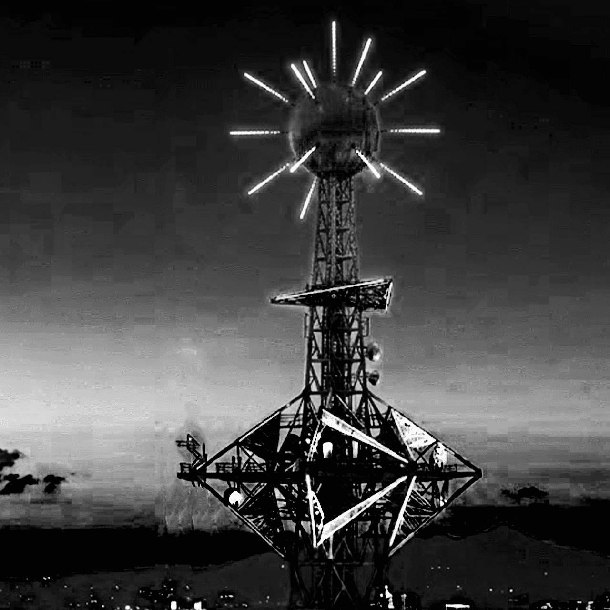

WELCOME TO SHINNAN
ネオンに塗れた黒い街
シンナン情報サイトへようこそ。当サイトでは、政府によって選別された情報をもとに、本都市に関する基礎的な案内を掲載しています。観光客の方や登録市民の皆様が、街の仕組みや特徴を理解するための一助となることを目的としています。
この街の歴史、天使の在り方、そして個性豊かな各地区について順にご紹介します。ぜひ最後までご覧いただき、シンナンの魅力を家族や友人にもお伝えください。
シンナン、通称ネオンシティが、なぜその名で呼ばれるようになったのかご存知でしょうか。現在のシンナンはネオンライトで溢れる街ですが、2020年代のこの街にはネオンはおろか、LEDライトさえほとんど使われていませんでした。夜の街を照らしていたのは、街灯の白熱電球と、建物の窓から漏れる蛍光灯の明かりだけだったのです。
当時の住民は、強い光をそれほど好んでいませんでした。むしろ暗い街並みを好み、時折点滅する街灯の頼りない明かりこそが、この街にはちょうど良いと考えられていました。
しかし、その考えが誤りだったことを、住民たちは20年代後半になって知ることになります。
20年代後半に、それは起こりました。
裂目事変は突如として起きた自然災害であり、光の届かない空間が裂けることで、世界の裏側であるヤミが露出してしまう現象です。
ヤミに生者が落ちると、その人物に関する記録や記憶は消失します。そのため発生当初、人々はヤミを認識することができず、ただ「暗闇がある」としか理解できませんでした。裂目事変の被害が初めて把握されたのは、発生したとされる日からおよそ3ヶ月後のことです。シンナンを管理する者たちが、住民数の急激な減少に異変を感じたことがきっかけでした。
ヤミに落ちた者に関する記録や記憶は消えてしまいます。しかし、シンナンに登録されている住民データの総数を示す数値は、管理者の記憶から消えることがありませんでした。それは特定の「人物」を示す記憶ではなく、単なる数値情報であるため、世界が消去する対象には含まれなかったためです。
シンナン管理局は調査を進め、住民減少の原因がヤミへの落下による存在消失であることを特定しました。
住民減少の拡大を抑えることに成功したシンナンは、この災害を裂目事変と命名し、ヤミの存在や発生条件などの情報を世界へ向けて公開しました。
シンナンの街にネオンライトが積極的に設置されるようになったのは、この発表以降のことです。光の届かない空間がヤミを発生させるため、安定した光源であり視認性にも優れたネオンライトが都市照明として採用されました。
やがて街の至るところにネオンが灯り、その独特の景観から、シンナンは次第に「ネオンシティ」と呼ばれるようになったのです。
裂目事変からおよそ1年後、黒い血を流す人間がいるという報告が相次ぐようになりました。
それらは見た目こそ人間、竜人、獣人、プラズマ体などさまざまでしたが、共通して奇妙な性質を持っていました。攻撃を受けると傷口から黒い液体が流れ出し、やがてその身体は元の形へと再生してしまうのです。
シンナンは、この正体不明の存在を看過することはありませんでした。管理局による調査の結果、それらが世界の裏側であるヤミから生まれた存在であることが特定されました。
この存在は住民社会に大きな影響を与えました。その影響の一つとして、彼らを神の使いとみなし信仰する団体が現れます。彼らはこの存在に「天使」という名称を与え、その呼び名はやがて街全体へと広がっていきました。
そして現在では「天使」という名称がシンナンにおける正式な呼称として定着しています。これが、シンナンにおける天使誕生の経緯です。
これは、シンナンで最初に発生した天使災害の記録です。当時の私たちは、天使が成長することで世界を滅ぼしかねないほどの力を持つ存在であることを知りませんでした。突如として巨大化した天使を前に、人々は破壊されていく街を見守ることしかできなかったのです。
この災害を辛うじて乗り越えたシンナンは、同じ事態を二度と繰り返さないための対策を徹底しました。天使は発生して間もない段階で確実に討伐する方針が定められ、その任務を担うために「惡魔」と呼ばれる新たな職業が設けられました。
さらに、天使の早期発見を目的として、住民には天使を発見した際の報告が義務付けられました。街に設置されるネオンライトの数も増やされ、ヤミの発生を防ぐとともに、異変を見つけやすい環境が整えられました。
これらの取り組みによって天使災害は大幅に減少し、シンナンは現在の安全な都市としての姿を築いていったのです。

シンナンのシンボルマークになっている建造物、太陽の塔について説明しましょう。
太陽の塔と呼ばれているこの電波塔は、第六区の光南に鎮座しています。全高600m、上部には菱形のような部位があり、そのさらに上には球体が見えます。球体には白く光る棘が生えており、その形状が太陽のようだと言われることからこの名がつきました。
裂目事変発生より遥か昔に建てられた太陽の塔はシンナンの大切な歴史の一つであり、今も昔も、そしてこれからも、変わらぬ姿でこの街を見守ってくれるでしょう。
シンナンには、それぞれ異なる特徴を持った個性豊かな地区が存在します。各地区の紹介ページの最後に安全度も記載していますので、観光先を選ぶ際の参考としてぜひご活用ください。
シンナンの玄関口ともいえる明水区。大きな川が流れ、水が街の景観の一部となっている港町です。中心部に比べてネオンライトは少なく、代わりに街灯の白熱電球が水面に反射し、淡くやさしい光で街を照らしています。
裂目事変以降も、明水区には昔ながらの雰囲気が色濃く残っています。外国語を話せる住民が多く、住民同士はもちろん、観光客との交流も活発な地区です。
露店では明水ならではの食べ物が販売されているほか、さまざまなイベントも開催されており、観光客から人気の高いエリアのひとつとなっています。
安全度 : ◎
シンナンの中心機能を支える新豊区。交通機関が発達しており、生活の気配が色濃く感じられる工業地区です。ネオンライトの数はほどよく抑えられており、街全体には落ち着いた雰囲気が漂っています。その居心地の良さから、新豊に暮らす住民の多くはこの土地を離れたがらないと言われています。
ネオンシティとして紹介される中心部の華やかな景観を求める人にとっては、やや控えめに感じられるかもしれません。しかし、かつてのシンナンの面影と現在のネオンの街並みの両方を味わいたい方には、特におすすめの地区です。
街の雰囲気と同様に落ち着いた住民が多く、ゆったりと観光を楽しみたい人から人気を集めています。
安全度 : ◯
凸凹としていながら、不思議と安定した空気を持つ永安区。古い住宅街と再開発エリアが入り混じる複合地区です。明水のような落ち着いた街並みもあれば、南街のようにネオンライトに満ちた路地もあり、場所によって表情が大きく変わります。住民の気質もさまざまで、その多様さからシンナンでは「凸凹な街」と呼ばれることもあります。
この地区の大きな特徴は、街全体に流れる静けさです。住民たちはそれぞれ自分の生活を大切にしており、必要以上に他人へ踏み込まない人が多い傾向があります。
自分のペースで街を歩きたい方には、ぴったりの環境と言えるでしょう。
安全度 : ◯
信仰と絆の土地天和区。塗装のされていない鉄製の建物が多く並ぶ、整備が遅れがちな地区です。シンナンで「ストリートの街はどこか」と尋ねれば、多くの住民が天和区の名を挙げるでしょう。整備の行き届いていない路地裏に灯るネオンライトは、ほかの地区にはない独特の雰囲気を生み出し、多くの人を惹きつけています。
しかし、この地区には魅力だけでなく注意すべき点も存在します。そのひとつが宗教団体の存在です。本来、宗教は人々を正しい道へ導くものとされていますが、天和区では事情が異なります。過激な思想を持つ団体も多く、暴力沙汰が発生することもあり、ニュースで取り上げられることも少なくありません。
安全度 : △
シンナンの心臓南街区。シンナンの中心部に位置する繁華地区であり、その活気から「街の心臓」とも呼ばれています。百貨店や飲食店が多く集まり、人通りも多いため、昼夜を問わず賑わいを見せています。第六区の光南と同様にネオンライトが数多く設置されており、ヤミの発生が少ないことから比較的安全な地区とされています。
南街は天和区と隣接しているため、違法な商売を目的とした流入を防ぐべく、警察による取り締まりが厳しく行われています。また、裂目事変が発生した中心区域でもあることから、天使が発生した場合には惡魔によって速やかに処理が行われる体制が整えられています。
こうした対策により治安は安定しており、観光客の方でも安心して街歩きを楽しめる地区となっています。
安全度 : ◎
人とネオンで溢れる光南区。シンナンと聞いて、多くの人が思い浮かべるのは大量のネオンライトではないでしょうか。ネオンシティの象徴ともいえる場所が、この光南区です。路地裏を歩いても、ビルを見上げても、視界に入るのはネオンの光。光南には、ネオンの灯っていない場所はほとんどありません。
高層ビルが立ち並び、大手企業の広告看板も数多く見られます。生活に必要なものはほとんどこの地区で揃うため、訪れれば不便を感じることは少ないでしょう。
永安区とは対照的に、この街に静寂はほとんどありません。住民も観光客も多く、どこかで誰かの声や音が聞こえる、にぎやかな地区です。
安全度 : ◯
企業資本が集中する龍華区。多くの企業が拠点を構える商業地区であり、富裕層の住民が多い傾向にあります。街の整備が行き届いており、路地裏を歩いていてもポイ捨てされたゴミを見かけることはほとんどありません。光南区よりもさらに高層ビルが多く立ち並んでいますが、ネオンライトの数は比較的控えめで、落ち着いた景観が広がっています。
最新の技術と安定した電力・通信環境が整っているため、快適で効率的な生活を送ることができる地区です。
また近年は人工培養ミートが広く流通するようになり、龍華区の多くの飲食店でも、それを使った料理が提供される傾向があります。
安全度 : ◎
Q 滞在するための許可証などは必要ですか？
A 必要です
シンナンの住民はデータがあるので人と判別できますが、観光や仕事目的で来た方にはデータがありません。そのため許可証を申請し、それを持っている時のみシンナンの街を歩くことが可能です。
許可証がない場合は不法滞在と見なされ強制帰還になります。また最悪の場合、天使と判断され処理を行われる可能性があるので、シンナンに滞在する間は肌身離さず許可証を持ち歩きましょう。
Q ヤミや天使を見つけた場合はどうすればいいですか？
A 直ちにその場から離れ、定められた機関への報告をお願いします
自身の身の安全のため、直ちにその場から離れTel : ███に報告をお願いします。シンナンの住民は報告が義務付けられていますが、観光や仕事目的で滞在している方は任意で構いません。ですが天使災害発生を防ぐため、可能な限り報告をお願いします。
記録一覧に戻る